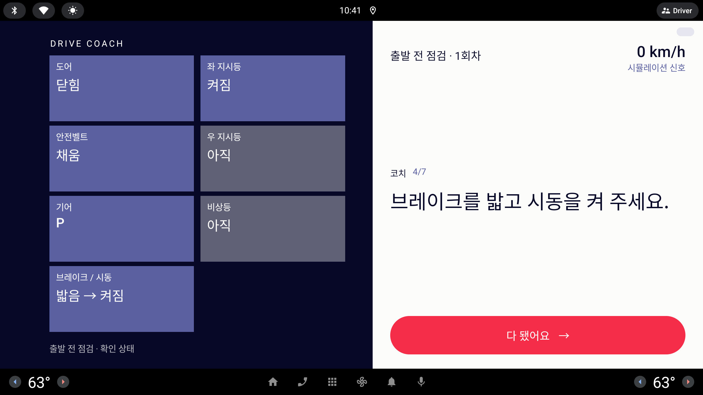

왼쪽 Ink 패널의 일곱 장 카드. "아직" 을 "미수행" 으로 바꾸고, 제목·값이 똑같이 반복되는 단조로운 구성을 미니멀한 다섯 가지 형태로 다시 짠다.
"왼쪽에 위치한 '도어/좌 지시등...' 등의 카드 내의 멘트 수정이 필요. 아직이라는 단어 보다는 미수행으로 변경. 카드 제목과 안에 내용의 구성이 단조롭고 디자인이 없는 느낌이라 5가지 정도 미니멀한 디자인 컨셉을 제안 받아서 진행하고 싶어"— 사용자 피드백, 라운드 21
모든 시안은 1/3 축척 · 실제 화면은 약 3배 (853×423 = 2560×1268 dp) · 왼쪽 패널 카드 영역 약 358×340
지금
Periwinkle 직사각형 일곱 장, 2열. 완료와 미완료의 차이는 카드 색이 회색빛으로 어두워지는 것 하나뿐이고, 값 자리에 "아직" 이 들어간다. 잘못한 경우(-bad)는 "브레이크 없이 켜짐" 처럼 사실을 적고 같은 회색이 된다. 그림자·도형이 없어 "표" 처럼 보인다.
모두 완료

진행 중 — 미완료 카드가 회색 + "아직"
상태
지금
시안(모든 안 공통)
완료
닫힘 · 채움 · P · 밟음 → 켜짐 · 확인
그대로
안 함
아직
미수행
잘못함
브레이크 없이 켜짐
그대로 (사실 문장) · 표시는 Signal
신호 없음
—
미측정 (점선 · 흐리게, 채점 제외)
아래 시안은 모두 같은 섞인 상태 — 완료 4(도어 닫힘 · 안전벨트 채움 · 기어 P · 브레이크/시동 밟음 → 켜짐), 미수행 3(좌 지시등 · 우 지시등 · 비상등). 오른쪽 코치 문장은 다음 할 일. 화면에 숫자 없음(속도 계기 값만 예외).
DRIVE COACH
도어
닫힘
좌 지시등
미수행
안전벨트
채움
우 지시등
미수행
기어
P
비상등
미수행
브레이크 / 시동
밟음 → 켜짐
출발 전 점검 · 확인 상태
출발 전 점검
0 km/h시뮬레이션 신호
코치
왼쪽 지시등을 켜 주세요.
다 됐어요 →
완료
도어
닫힘
미수행
비상등
미수행
잘못함
브레이크 / 시동
브레이크 없이 켜짐
미측정
비상등
미측정
A
체크 원
지금의 2열 카드를 그대로 두고, 오른쪽 위에 상태 원 하나를 더한다. 완료 = Paper 원 + 체크, 미수행 = 빈 Signal 고리.
장점
배치가 그대로라 구현이 가장 쉽다(카드에 원 하나 + 색 규칙).
"채운 원 = 끝남, 빈 고리 = 남음" 은 설명이 필요 없는 기호다.
미수행 카드는 면을 거의 비워 완료 카드와 명도 차가 커진다 — 지금의 "회색으로 살짝 어두워짐" 보다 훨씬 또렷하다.
주의점
구성 자체(제목 위 · 값 아래)는 그대로라 "단조롭다" 는 지적을 절반만 푼다.
원이 실제 약 60 dp — 그보다 작으면 운전석 거리에서 체크가 안 보인다.
DRIVE COACH
점검확인 상태
도어닫힘
안전벨트채움
기어P
브레이크 / 시동밟음 → 켜짐
좌 지시등미수행
우 지시등미수행
비상등미수행
출발 전 점검 · 확인 상태
출발 전 점검
0 km/h시뮬레이션 신호
코치
왼쪽 지시등을 켜 주세요.
다 됐어요 →
완료
도어닫힘
미수행
비상등미수행
잘못함
브레이크 / 시동브레이크 없이 켜짐
미측정
비상등미측정
B
진행 막대
카드 일곱 장 대신 질감 카드 한 장 안에 점검표 일곱 줄. 위에 일곱 칸짜리 얇은 막대가 숫자 없이 진행을 보여 준다.
장점
"점검표" 그 자체의 모양 — 왼쪽 이름, 오른쪽 값으로 한 줄씩 훑기 쉽다.
막대가 "얼마나 남았나" 를 숫자 없이 알려 준다(운전자 화면 숫자 금지 지킴).
완료 줄은 흐리게, 미수행 값만 Signal 이라 남은 일에 눈이 간다.
주의점
줄 높이가 실제 약 114 dp 로 카드보다 작다 — 글자는 본문 크기(40 dp)를 유지해야 한다.